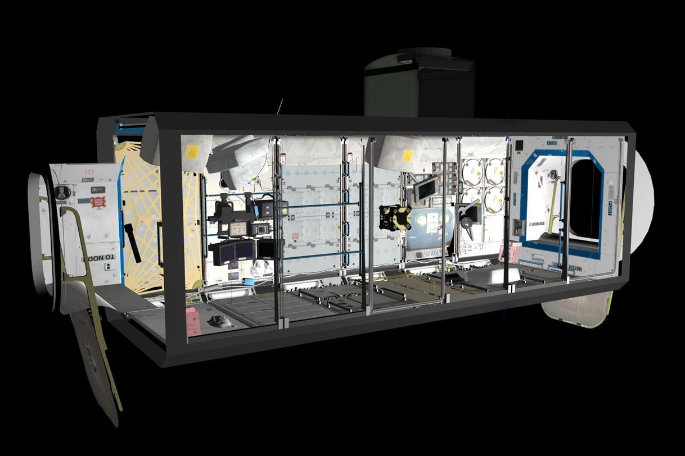
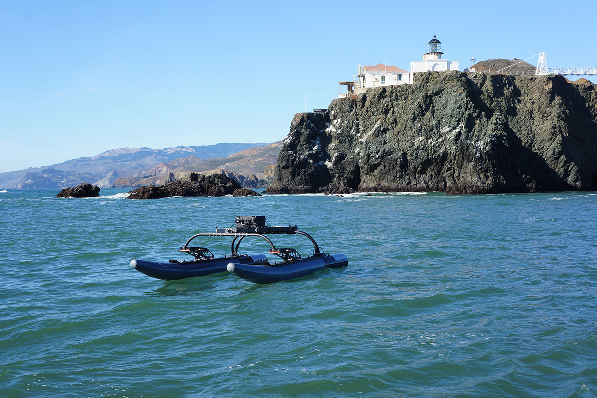
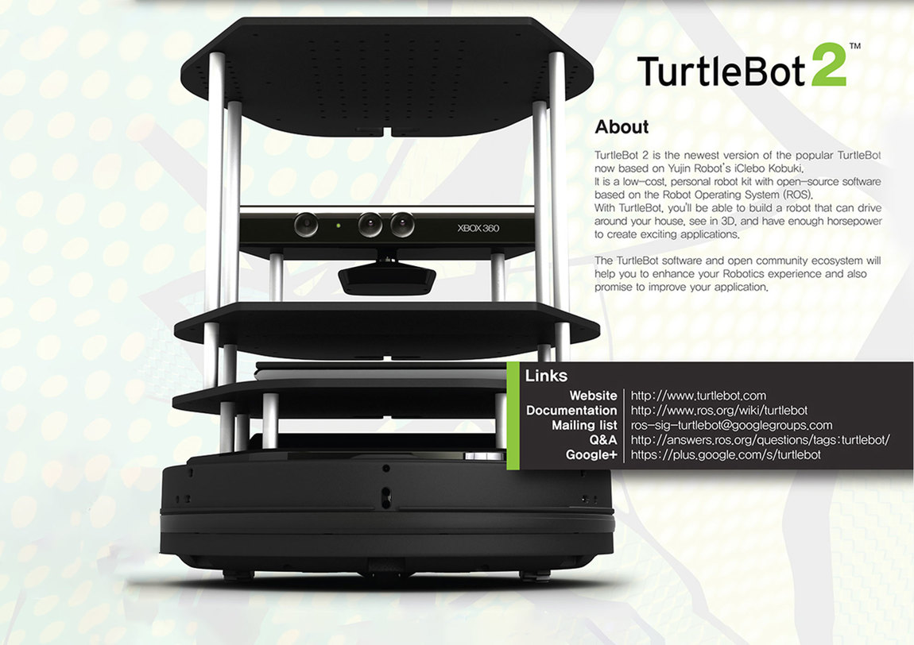
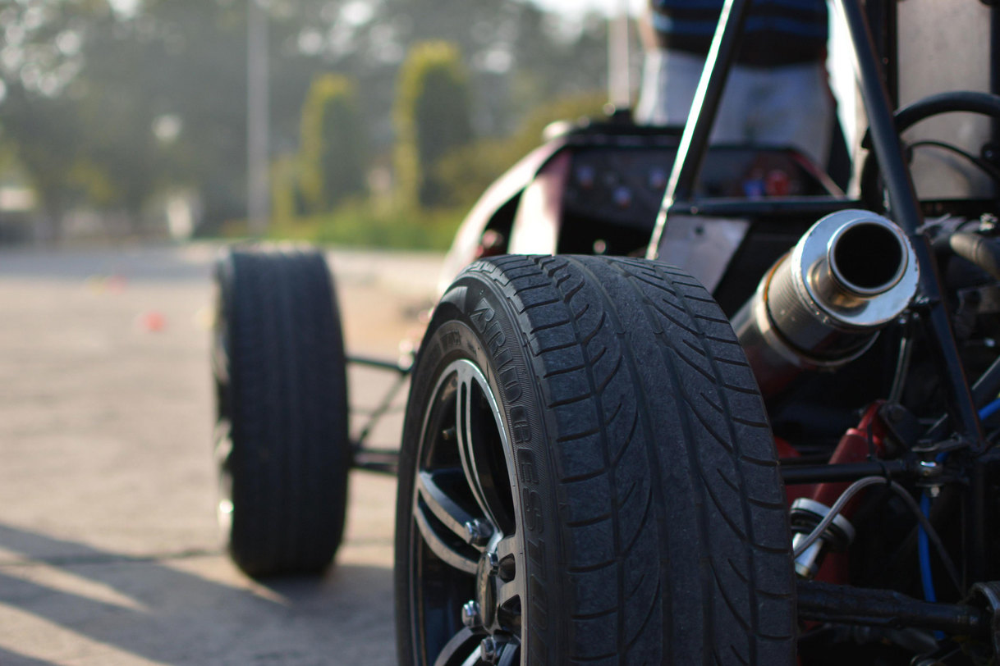
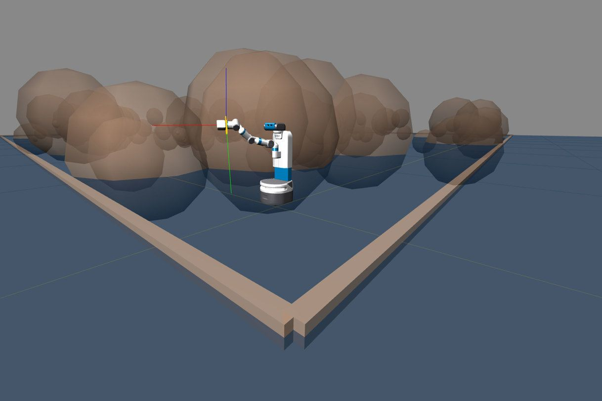
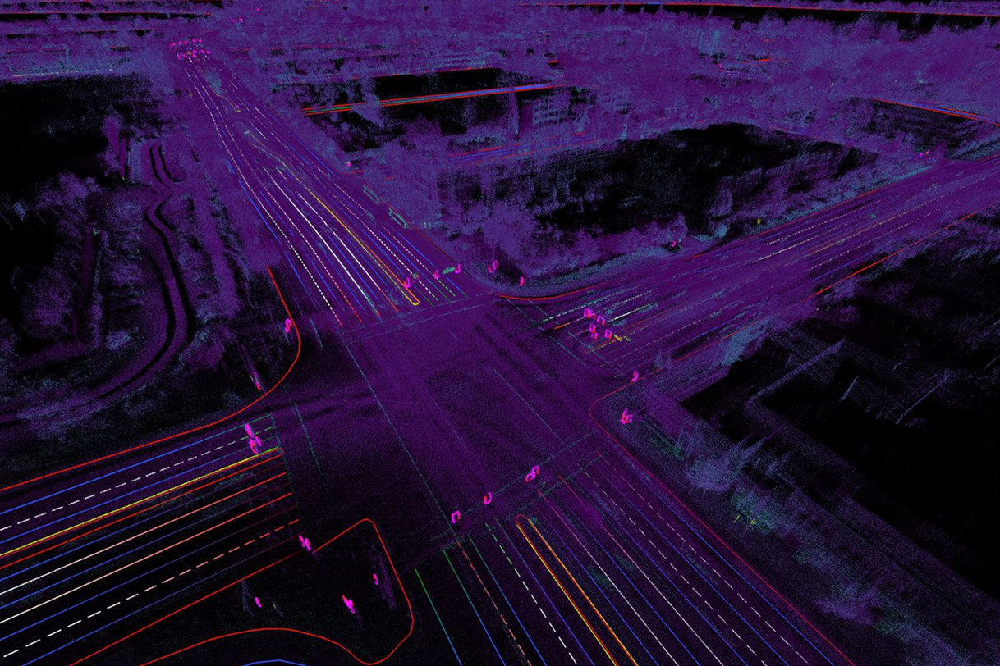
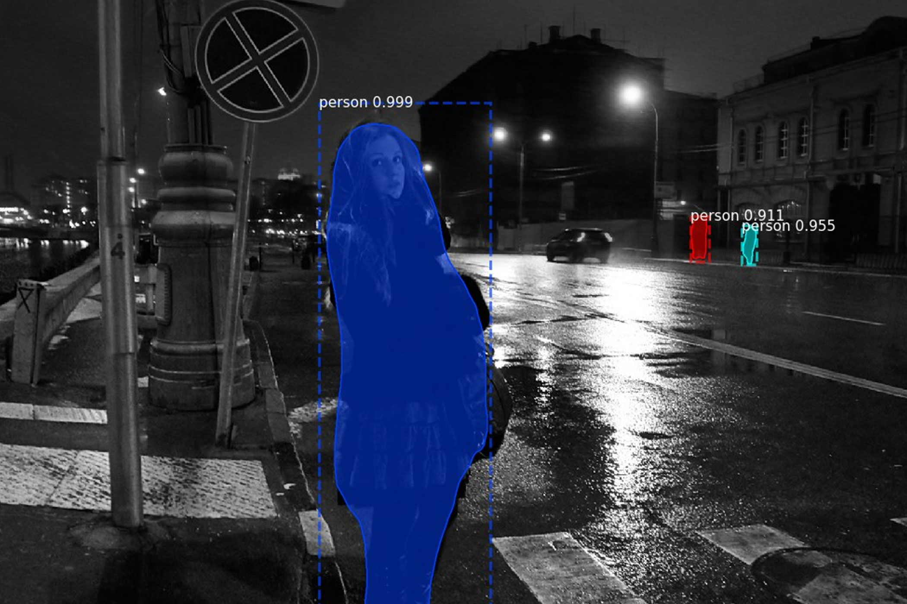
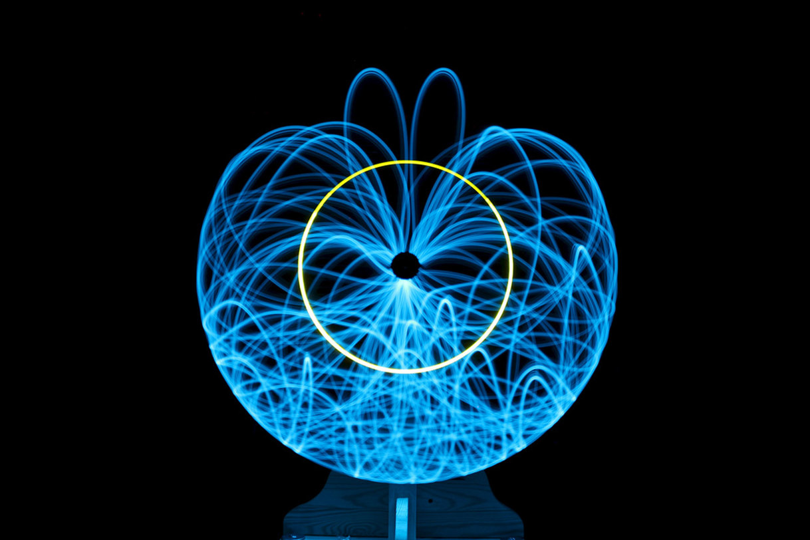
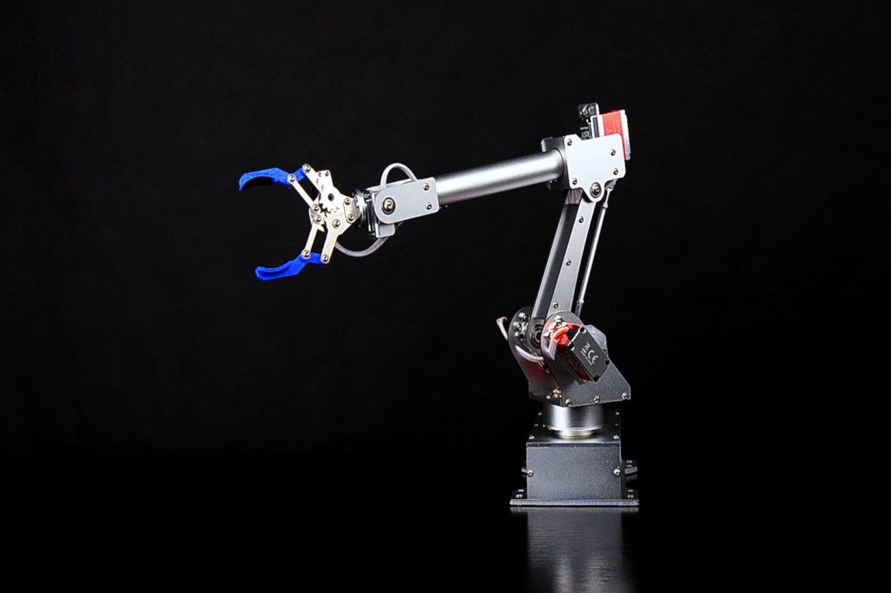
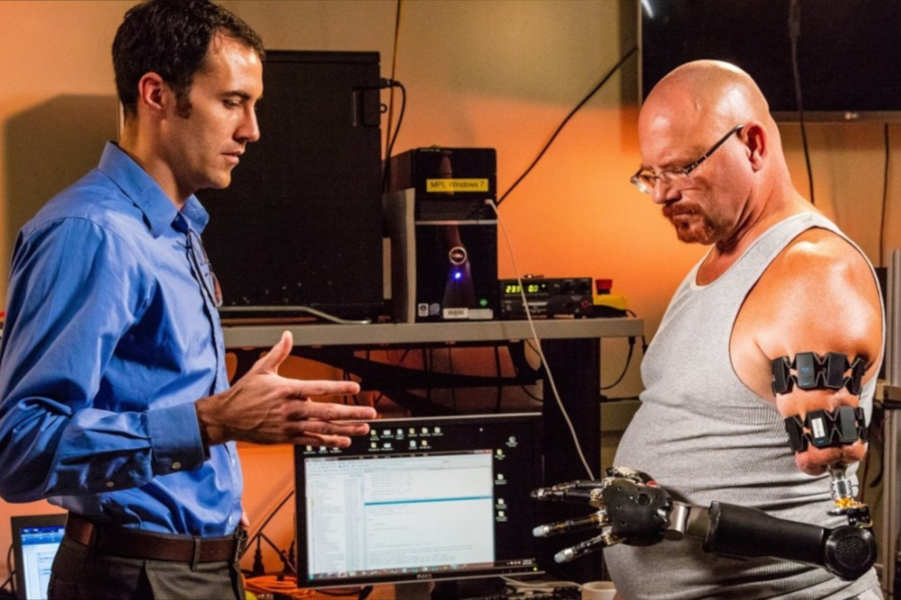

Technical Projects

NASA Astronet
The AstroNet Simulator is developed as an extension to NASA's open-source simulator, where I develop control schemes, task allocation paradigms and navigation algorithms for each of the Astrobee Robots for surveillance and coverage. ROS Kinetic is used for simulating the algorithms, and to interface with the quadcopters (representing astrobee robots in our environment). A VR-based environment of the whole International Space Station with the robots in it has been implemented and can be visualized on the Oculus Rift.
keywords: VR, ROS, Gazebo, multi-agent control, quadrotors
Project LinkAUVSI Robot-X
AUVSI's Robot-X competition is an attempt at automating surface vessels to revolutionize the marine industry. The robot should be capable of performing several tasks such as SLAM, Trajectory Planning, Obstacle Avoidance, etc. My on-going contributions to the project are in LOAM (Velodyne HDL32, Ladybug 3 and GPS/IMU module used as sensors), Trajectory Planning, Object Detection, and Network and Communication Setup. The whole framework is being developed on ROS Kinetic.
keywords: ROS, autonomous vehicle, LOAM, MPC, sensor fusion, lidar, deep learning
Project Link

Path Planning & Multi-Agent Exploration
This project involves comparative analysis of state-of-the-art path planning and multi-agent exploration algorithms via simulation and experimentation. Simmulations are performed on 50+ fabricated grid maps of size 50 x 50 on a python based simulator. To validate the results, experiments with Turtlebots are also performed. Nodes for the studied path planning and exploration algorithms are written and 10 different laboratory environments are explored.
keywords: ROS, Turtlebot 2, Path Finding - JPS/A*/Dijkstra/BFS, Exploration - CAC/Yamauchi/Burgard/Faigl, multi-agent exploration, path planning
Project Link DemoPoseNet++
An online-deep learning based-data labeling paradigm derived from structural motion is implemented. We directly label (6-DOF measurements) the input data (camera video feed) streamed from a mobile camera using this paradigm. This labeled data is then used to train PoseNet, which acts as the sensor model for Incremental Smoothing and Mapping (iSAM). GPS data from the used dataset's is used to build the action model. Georgia Tech's GTSAM is then used for simulation. The algorithm is also implemented on a differential drive mobile robot.
keywords: deep learning, PoseNet, kidnapped robot, iSAM, GTSAM, NCLT, Cambridge Landmarks
Project Link
Formula SAE - Italy'14
My contributions to the team were focussed on the design and fabrication of a double wishbone push-rod suspension system for the Formula SAE prototype. The work I did included the design and optimization of the bell-crank geometry, design and fabrication of the push-rod and a-arm geometry, and the design of the wheel hub. I also worked on calculating the roll center migration, spring rates, roll rates, anti-squat/anti-dive and the suspension frequency for the car.
keywords: Formula SAE, suspension design, roll center migration, double wishbone suspension, fabrication, Solidworks, ANSYS, Msc Adams
Project LinkRobot Kinematics Simulator
The simulator was built as part of one of my courses here at Michigan. It is capable of interfacing with ROS over the web, giving anyone access to control a robot through any operating system. Given the URDF of a robot, the simulator is capable of automatically parsing the structure of the robot and calculating the forward (using matrix stack) and inverse kinematics (using cyclic co-ordinate descent). Features such as object following and trajectory planning using RRT-Connect and other algorithms is built into the simulator.
keywords: RRT/RRT*/RRT-Connect, CCD, forward/inverse kinematics, matrix stack, URDF parsing, robot webtools
Project Link Demo

Simultaneous Localization and Mapping
We implemented an occupancy gird based mapping mechanism, particle filter based localization algorithm and Yamauchi's autonomous exploration algorithm on a differential mobile robot running on a raspberry pi3 and beaglebone black. My contributions to the team included implementations of the action model, sensor model, the particle filter and the exploration algorithm. I also worked on the low-level control structure of the robot to minimize latency in the receiving and sending of commands.
keywords: localization, mapping, lidar, LCM, particle filter, raspberry pi 3, beaglebone black, Yamauchi's exploration
Project LinkMask R-CNN based Pedestrian Tracking
Matterport's implementation of Mask R-CNN is used in this application and slightly modified to detect only pedestrians (to keep computational requirements low). On top of this, we use Gunner Farneback's algorithm to compute the dense optical flow in each of the successive video frames. Since no ground truth is known here (as we do track pedestrians live using a mono camera), we use the instance segmentation given to us by Mask R-CNN and compute the net motion for each of the segments. We then use a particle filter for tracking one of the segments.
keywords: deep learning, convnets, particle filter, dense optical flow, pedestrian tracking
Project Link

Game Physics - Pendulum Simulations
One of the most trivial control problems is that of a pendulum. In this project, a simple PID control structure was written for controlling the pendulum. Some of the prevalent integrators were implemented for the physics of the simulation : Euler Integrator, Verlet Integrator, Velocity Verlet Integrator and the Runge Kutta (RK4) integrator.
keywords: integrators - RK4, velocity verlet, verlet, euler, pendulum, cart pole
Single Pendulum Double Pendulum Cart Pole SimulationVision Based Autonomous Robotic Arm
The aim of this project was to automate redundant tasks using a robotic arm. The equipment we were provided with were a Microsoft Kinect and a dynamixel arm with four degrees of freedom - RRR:R. Our task was to design an efficiemt gripping mechanism for the robot and detect different colored cubes using depth maps and images streamed from the overhead Kinect. Once done, we were to design a Spline -based trajectory algorithm for smooth motion of the arm and complete 5 assigned tasks whose details were predefined.
keywords: - robotic arm, object detection, Kinect, forward/inverse kinematics, LCM, manipulator control, spline generation, gripper design


Portable White Board Cleaner
This project focussed on the conceptualization, design and fabrication of a state-of-the-art whiteboard cleaner which, unlike conventional ones, was portable and inexpensive. The design was based on a simple RR:PR manipulator structure and was capable of cleaning boards of sizes upto 4' x 6' autonomously on the click of a button. The prototype was powered by an Arduino UNO and 4 servo motors. The results of this research was presented in the IEEE UPCON'15 conference at IIIT, Allahabad.
keywords: - robotic arm, whiteboard cleaner, forward/inverse kinematics, arduino, arm design
Paper LinkGesture Controlled Robotic Arm
A gesture controlled robotic arm was designed and fabricated under the guidance of Dr. R.K.Mittal. Arduino-UNOs (one on the hand and the other controlling the robot) as our micro-controllers, 2 Inertial Measurement Units- MPU 6050 (to sense hand gestures and provide feedback) and the XBee for wireless communication. An application in Processing was also developed so that the arm could be manually controlled via sliders, instead of the IMU, when desired. The arm was capable of augmenting human capabilities with a reachable spherical workspace of radius 2m and payload capacity of 500gm.
keywords: - robotic arm, gesture control, forward/inverse kinematics, arduino, arm design
